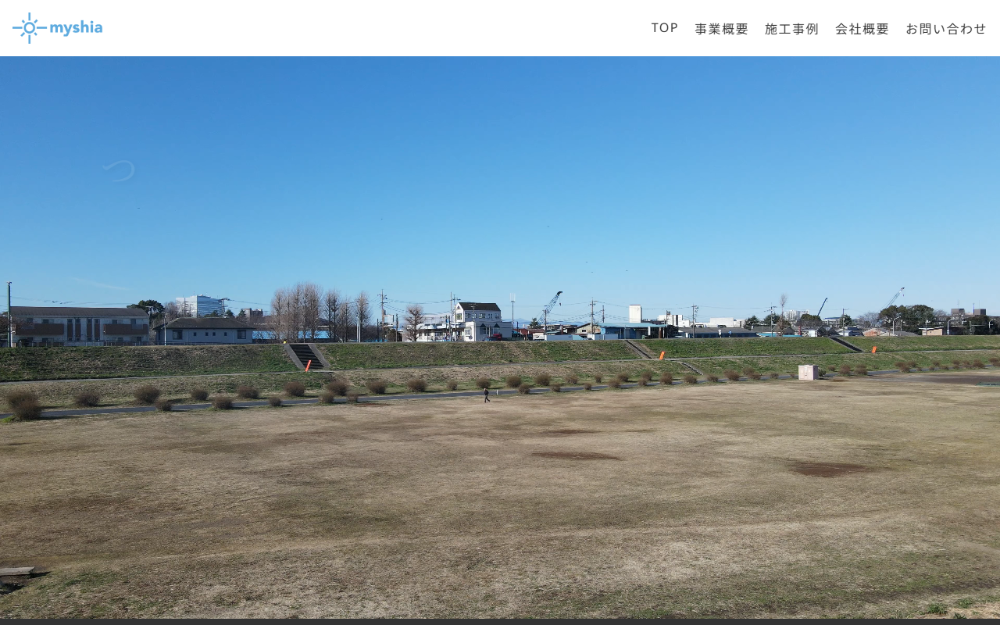

TECHWEDGE.
AI AUTOMATION UNIT — OSAKA
表面のmyshiaを運営する中芝が、AIのプロ・エンジニアと組んだ3人体制で、建設会社向けのAI導入・研修・事務作業自動化を支援しています。
「AIって、実際なにができるの？」
職人が実際にAIをフル活用し、
建設現場に特化したノウハウをご提供します。
現場の職人×AIのプロ×エンジニアの3人体制で支援します。
AIを使う業務の選定から、社内で継続運用できる状態まで支援します。
自社実績（領収書仕分け）
月約3時間
→
月20分
約88%削減・myshia実運用400件
01
こんな困りごとありませんか
見積書・請求書づくりが、気づけば夜の仕事になっている
「AIって聞くけど、うちの現場に使えるのか分からない」
事務作業を任せられる人がおらず、社長や奥さんが抱えている
02
できること
01AI初期導入支援事務作業を一緒に棚卸し→研修→最初の1業務の導入・定着まで伴走主力
02年間AI研修プログラム全6回・専門用語なし。社員が自社業務でAIを使える状態を目指します提供中
03建設業の事務作業自動化見積・請求・領収書等、効くところから自動化提供中
03
AI初期導入支援の一例 — 領収書仕分けを自社で実践
BEFORE：①紙の整理②読み取り③科目判断④事業者切り分け⑤格納⑥受け渡し準備⑦差し戻し対応 ／ AFTER：①スキャン②AI処理③確認・承認④受け渡し⑤差し戻し対応
出典: 2026年1〜6月・myshia実運用400件（170分≒約3時間→20分・約88%削減）
04
AI・DX支援の実績
事業の土台（HP・業務システム）から、日々のAI活用まで。まとめて整備できます。

表面のmyshiaのHPも、
うちの制作です
myshia HP
まずは対象業務と料金をLINEで相談
スキャンするとLINEの友だち追加が開きます。
お名前と「チラシ見た」だけでOKです。
TEL：090-6908-0713（担当：中芝）
MORE / 料金
tech-wedge.com
料金は、導入費＋月額制です。
詳しくはお問い合わせください。
TechWedge（運営：中芝悠太）
大阪府大東市南楠の里町3-33